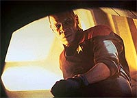
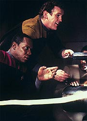
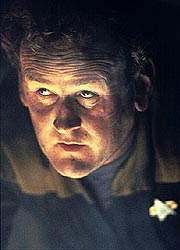
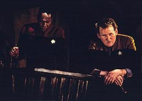
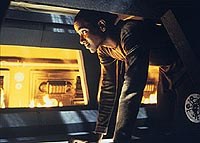

|

|
|
MANCHETE
DO EPISDIO
Raro
segmento orientado a trama opta
por tom leve, em vez de um thriller
Episdio
anterior | Prximo
episdio
Sinopse:
Data Estelar:
desconhecida.
Jake Sisko est ajudando o chefe
O'Brien na converso de uma antiga unidade de processamento de
minrio Cardassiana em uma refinaria de deutrio em DS9,
enquanto o comandante Sisko chega e convida os dois para comer.
Subitamente, o procedimento de remoo dos antigos arquivos do
computador local esbarra em um antigo programa de segurana,
desenvolvido pelo antigo comandante da estao, gul Dukat, que
aparece em todos os monitores de DS9 em uma gravao. O tal
programa interpreta a tentativa de acesso dos dois como "uma
rebelio de trabalhadores Bajorianos" (assumindo ainda estar
operando nos tempos da ocupao Cardassiana). O computador os
tranca na unidade e mesmo Kira, Dax e Bashir no OPS no conseguem
fazer nada sem um legtimo e vlido cdigo de acesso
Cardassiano.
 Odo,
no seu escritrio, chama Kira e diz que o seu antigo cdigo
Cardassiano ainda vlido e ele est tentando ajudar do seu
terminal (o que no d em nada). Quark chega e diz que a imagem
de Dukat nos monitores da estao est assustando a todos e
decide ficar, por achar aquele o lugar mais seguro de DS9 (os dois
acabam trancados no escritrio do comissrio, resmungando um com
o outro at o fim). Jake consegue se esgueirar por dentro da
tubulao que outrora transportava minrio derretido e consegue
abrir o alapo por onde descia o uridium, os trs conseguem
escapar na hora em que o computador comea a liberar gs
neurocine (que fatal) para dentro da unidade. Os trs chegam a
um pequeno depsito totalmente lacrado, com restos de uridium no
processado e um vago. Com a fuga deles o computador aperta o
cerco, entrando no seu primeiro nvel de defesa contra insurreies
na estao, colocando campos de fora envolvendo completamente
cada compartimento acessvel e bloqueando tambm as vias de
acesso (campos de fora que apenas Cardassianos devidamente
autorizados podem atravessar), alm de produzir um campo de
dissipao que impede as comunicaes. Sisko e cia. tentam
usar o vago como arete para abrir caminho, mas sem sucesso.
Sisko sugere ento usar o uridium como explosivo, O'Brien comea
a arrancar uma luminria para obter um cabo eltrico para
detonar o minrio.
 Dax
est trabalhando no computador, quando um campo de fora aparece
de repente e queima as suas mos. Isto faz o programa passar para
o nvel dois, que envolve a liberao de gs neurocine no anel
residencial. Neste momento, Garak (a nica pessoa na estao
"habilitada" a atravessar os campos de fora) chega ao
OPS e sugere que para impedir o gs eles devem destruir o
controle do suporte de vida, pois ainda ficariam com 12 horas de
oxignio de reserva para resolver toda a situao. Kira assim o
faz e o programa vai para o nvel trs (assume que os
"revoltosos Bajorianos" tomaram a estao) e ativa o
programa de autodestruio de DS9, com retardo de duas horas.
Garak est tentando "crackear" o cdigo de Dukat
enquanto Dax planeja desativar os sensores do OPS, para que o
computador no possa checar o DNA de Garak (e compar-lo com o
de Dukat). Infelizmente o plano deles falha antes de ser executado
e o computador entra no nvel quatro do programa. Uma espcie de
arma feiser materializada pelo replicador, e, enquanto todos
buscam um abrigo, um tripulante vaporizado.
O plano de Sisko e cia. funciona e os trs conseguem sair do depsito,
mas no conseguem ir muito longe nos corredores, com campos de
fora em todo lugar. De volta ao OPS, em meio ao fogo cerrado de
feiser eis que o prprio Dukat surge se transportando de sua nave
(ele recebeu um absurdo "pedido de socorro" que dizia
que "revoltosos Bajorianos haviam tomado Terok Nor").
Primeiro ele tripudia da situao da tripulao (os disparos no
se dirigem a ele e descobrimos que tambm no para Garak),
depois pergunta por Sisko, toma um pouco de ch e diz que pode
ajudar, mas quer algo em troca da major Kira (ele desativa a tal
arma feiser, como sinal de "boa f"). Ele quer
estabelecer uma guarnio Cardassiana permanente em DS9. Kira
diz que ir destruir a estao antes de deix-la cair de novo
em mos Cardassianas. Dukat diz que vai voltar para sua nave e
daqui a 25 minutos (faltam 30 minutos para a autodestruio) vem
saber a resposta de Kira. Quando ele tenta se transportar, acaba
por ativar uma contra-medida plantada por um superior dele na poca
da ocupao (legado Kell), para impedi-lo de fugir se a estao
fosse tomada. Agora todos os cdigos deixam de ser vlidos e
Dukat est no mesmo barco que os demais.
 O
cdigo de Dukat de fato no vale mais nada. O gul explica o
processo de autodestruio: ao fim da contagem, o computador
desativa o estabilizador de reao e da o reator de fuso
principal sobrecarrega at explodir, levando a estao com ele.
Um plano claro chegar na sala de controle do reator para evitar
tal processo manualmente, e eles decidem tambm que precisam
desativar todos os campos de fora da estao para chegar at
l (um por um, levaria uma eternidade). Dax sugere que eles
sobrecarreguem a grade interna de energia. Como os antigos
"neutralizadores Cardassianos" (usados para campos de
conteno letais) esto desativados, mas ainda no fisicamente
no lugar, Dukat sugere conect-los novamente grade de fora e
us-los para produzir a sobrecarga, no que Kira concorda. Aps vrias
exploses devido sobrecarga, os campos de fora se vo e as
comunicaes voltam. Sisko fala com Kira que explica o plano e
Sisko diz que eles so os nicos suficientemente perto para
execut-lo.
Com o corredor de acesso bloqueado devido s exploses, O'Brien
acha um duto de manuteno que eles descobrem cercado de ambos
os lados por chamas de plasma. O comandante e o chefe entram no
duto, O'Brien se acidenta, mas Sisko consegue chegar sala de
controle. Jake, que havia ficado para trs, entra no duto para
ajudar O'Brien a sair. Ben Sisko consegue redirecionar o acmulo
de energia para os escudos defletores e evitar a destruio da
estao. Odo e Quark so finalmente libertados e continuam a se
provocar mutuamente medida que andam pelo Promenade.
Comentrios:
Este um raro episdio de DS9 por ser, em sua quase
totalidade, orientado pela sua trama e no por seus personagens
(propositalmente feito fora do formato do programa pelos
produtores). Apesar de atpico para a srie, o episdio
divertimento garantido e sua trama sensvel e faz sentido a
maior parte do tempo. Um (absurdamente) caricato Dukat e o sempre
interessante Garak so os astros do segmento, que conta tambm
com os melhores dilogos da temporada at aqui. Uma premissa
batida (uma "batalha homem versus computador" que deriva
em mais uma "contagem regressiva para a aniquilao"),
a falta de relevncia das cenas entre Odo e Quark e um final
abrupto (claramente algum material foi cortado devido ao tamanho
do episdio) ferem o segmento, que , ainda assim, bastante
agradvel (ainda que no muito profundo --caindo ma categoria de
"DS9 Comic Book"(TM)). Saibam mais detalhes, sem ter que
salvar DS9 de sua destruio no processo, nas linhas abaixo.
A premissa do episdio definitivamente no ganha muitos pontos
por originalidade, apesar de ter uma execuo bastante esperta
com reviravoltas bastante interessantes. Entretanto, o ponto de
partida da histria polmico e costuma causar problemas para
alguns fs.
Uma freqente discusso entre os fs da srie ao longo dos
anos se a estao Deep space Nine, com as necessrias e contnuas
reformas que a Federao realizou (e realiza), pode ser
considerada uma "estao quase que totalmente constituda
por tecnologia da Federao, apenas mantendo a sua aparncia
Cardassiana original" ou uma "estao essencialmente
Cardassiana modificada apenas o suficiente para ser operada por
uma tripulao tpica da Frota Estelar". Provavelmente a
verdade sobre tal questo est em algum lugar entre estes dois
extremos. Tal discusso foge ao escopo desta anlise, mas cabe
salientar que tal questo nunca foi esclarecida explicitamente ao
longo da srie. O episdio parece apontar (implicitamente) para
a segunda alternativa (que tambm parece ser mais consistente com
a srie como um todo).
 Dito
isto, vamos desconstruir a lgica em que se baseia o episdio.
Jake trabalhava com o "moribundo" sistema da workstation
daquela unidade de minrio, fazendo coisas que no poderiam ter
sido feitas quando a unidade estava em boas condies no tempo
da ocupao. Por um azar, a tentativa de mover (copiar e
deletar) aquele arquivo especfico (que no tem nada a ver com o
programa de segurana e cujas propriedades "especiais"
no interessam, pois o sistema local no estava funcionando
direito mesmo, em primeiro lugar) ativou o monitor de segurana
da workstation, que pediu a senha de supervisor. O'Brien deu a
senha errada, o sistema local mandou uma mensagem para o
computador central que ativou o programa de segurana de Dukat e
da segue a histria.
O programa de Dukat poderia fazer parte do subsistema de segurana
do sistema operacional do computador central de DS9, com a hiptese
de que o sistema original ainda estaria sendo usado de alguma
maneira (por exemplo, em operaes em que a confiabilidade e um
baixo tempo de resposta fossem fundamentais, onde "segurana"
se encaixa perfeitamente). Se assumirmos que no existe mais uma
linha de cdigo Cardassiano no computador central de DS9, ainda
assim o programa de Dukat poderia estar escondido em
"hardware", por exemplo, no perifrico responsvel
pelo recebimento de mensagens de unidades remotas. O tal perifrico
recebeu, reconheceu o cabealho daquela mensagem especfica e
"despertou" o programa de Dukat e da tambm segue a
histria. A existncia da tal workstation funcionando e ainda
conectada ao computador central garante o ponto de partida da
trama.
Se a existncia e a ativao de tal programa at justificvel,
a sugesto de Dax para par-lo no to robusta assim. A nica
maneira de garantir o sucesso na erradicao do tal programa
seria um "shutdown" completo do computador principal e
de todos os perifricos conectados a ele, seguidos por um
"boot limpo" (de uma verso dedicada de
"hardware" e "software" especfica para isso)
e um completo e cuidadoso "back-up".
A melhor escolha do roteiro foi fazer o programa acreditar
plenamente estar ainda sendo executado nos tempo da ocupao. Alm
disso, mudanas na configurao dos sistemas da estao
(desde aquela poca) garantem dar trabalho para o programa tambm,
produzindo justificveis atrasos e falhas que os "nossos heris"
podem explorar. A ameaa cresce de forma gradual e consistente
com tal escolha e faz bastante sentido nesses termos.
Podemos dividir o episdio em trs ngulos relacionados:
"xadrez", "minerao" e "OPS".
A parte do xadrez a menos interessante, pois sua nica conexo
com a trama real do episdio a tentativa de Odo de obter
acesso ao sistema (uma boa idia, alis). De resto temos Odo e
Quark interagindo, o que isoladamente at divertido, mas faz
pouco pelos personagens e nada pela presente histria. O pior
que este "ngulo" que foi escolhido para encerrar o
episdio, que claramente ficou muito longo. Por que ento no
cortar esta parte?
 A
parte da "minerao" foi mais interessante. Ben, Jake
e O'Brien conseguem superar os obstculos de forma inteligente,
sem maiores exageros estilo "MacGyver" (apesar de aquele
"cabo de fora" ser meio ridculo). Jake ajuda de uma
forma crvel, sem parecer uma espcie de "superboy"
(um ponto negativo ele continuar usando aqueles
"pijamas"). O problema da seqncia final, com Sisko
finalmente evitando a exploso, que ela um bocado clich.
Apesar das "chamas verdes" tentarem dar "um
clima", o resultado extremamente previsvel. A princpio
seria de se esperar que Sisko simplesmente iria desviar a descarga
para o espao atravs dos circuitos dos defletores, mas os
efeitos visuais parecem indicar que ele desviou para os prprios
escudos, que j deveriam estar levantados (ou no?). O pessoal
de efeitos visuais tambm teve o cuidado de "ocultar" a
Defiant e a nave de Dukat nas tomadas.
A interao no "OPS" foi a melhor do episdio, com a
presena de Garak e de um Dukat "pra l de over". O
"replicador assassino" foi uma grande idia, mas
empalidece frente chegada de Dukat (aparentemente de volta s
boas graas do Comando Central Cardassiano, aps os eventos
vistos em "The
Maquis"), que vai falando com toda a calma enquanto
se apossa da situao e os demais tentam se proteger dos
disparos de feiser. Ainda temos Dukat dando um peteleco na bola de
beisebol de Sisko (uma questo recorrente entre os dois ao longo
da srie) e finalmente (e esta a melhor cena do episdio)
caindo refm do seu prprio programa (a reao dos outros
situao do gul hilria, principalmente a face de Kira). Por
outro lado a "proposta" de Dukat e a noo de poder
fazer alguma espcie de posterior "guerra de
trincheira" dentro da estao meio idiota. Faltou um
fechamento do papel de Dukat nesta histria (talvez uma cena com
Sisko e Dukat fosse a soluo ideal para o encerramento do episdio,
que ficou faltando).
O "novato" Reza Badiyi foi feliz em perceber o
"problema" das cenas envolvendo Odo e Quark e utilizou
uma estratgia compatvel com isso. Ele no tentou transformar
o episdio em um thriller intenso, pois se assim o fizesse as
cenas entre o comissrio e o Ferengi colidiriam flagrantemente
com as das outras duas histrias, da, adotando ento um tom de
farsa em que enfatizado mais o carter de entretenimento e
menos o de um perigo real e imediato, que o roteiro como escrito
funciona em seus termos. A msica do episdio foi bastante
fraca, basta conferir a cena em que Sisko e O'Brien rastejam,
ladeados pelo fogo. A trilha anmica, para dizer o mnimo.
Apesar de pouco efetivas (para a presente histria e para os seus
personagens), as cenas dos dois juntos ganham o destaque para
Shimerman e Auberjonois (grande qumica) dentre os regulares.
Visitor tambm esteve tima. Brooks deu algumas patinadas e
Farrell no foi muito feliz no seu tratamento das queimaduras das
mos de Dax. Lofton, Meaney e El Fadil se saram bem tambm (o
"acidente de O'Brien" e o imediatamente posterior
"resgate do chefe por Jake" poderiam ter sido mais
bem-executados, apesar de a culpa dos atores ser normalmente
pequena em tais situaes).
Alaimo, talvez inspirado pelo tom de farsa do episdio, lana mo
da sua mais exagerada e caricata atuao no curso da srie, o
que acaba funcionando e produzindo momentos bastante engraados
(e felizmente no traz nenhum dano grave ao seu personagem).
Robinson sempre um prazer de se assistir. A participao de
Danny Goldring, como o legado Kell, foi meio ingrata (para o
ator), mas o resultado final da sua nica cena foi excelente.
O passado entre Dukat e Garak (especialmente os eventos que
levaram morte do pai de Dukat) foi referido novamente ao longo
da srie, mas nada muito especfico foi estabelecido sobre tal
assunto. Uma verso (no-cannica) da origem de tal rivalidade
pode ser encontrada no livro "A Stitch In Time", do prprio
ator Andrew J. Robinson (o nosso querido Garak), que esmia
este e muitos outros pontos obscuros envolvendo o nosso
"alfaiate" predileto, contando toda a sua vida desde a
infncia (leitura altamente recomendada para os fs de Garak e
de DS9).
Durante a srie, Dukat flertou com Kira sempre que pde, ainda
que nunca tenha sido correspondido. Tal linha de histria teria
um bizarro "payoff" em "Wrongs Darker than Death
or Night", da sexta temporada. O curioso que os
relacionamentos entre Dukat e Garak, entre Garak e Kira e entre
Dukat e Kira seriam impactados por um mesmo evento: a introduo
de Zyial, a filha bastarda (e mestia Bajoriana/Cardassiana) de
Dukat, em "Indiscretion", da quarta temporada.
Devemos tambm notar que os reatores, os computadores, a seqncia
de autodestruio e os defletores de DS9 continuaram a funcionar
apesar do colapso da rede de fora interna da estao, o que
mostra a qualidade do seu projeto.
A idia de uma unidade dedicada de campo de fora para o
"xadrez" da estao tambm vlida. Apesar de ser
concebvel que ela tivesse sido instalada para obter um certo
controle sobre Odo, faz muito mais sentido como uma bvia medida
para impedir que potenciais revoltosos no libertassem os presos
para aumentar a anarquia, seno por alguma outra razo especfica.
A viso de fundo da cena final tambm fraca por no
demonstrar nenhuma urgncia nos reparos da estao. Eles tinham
que recuperar o suporte de vida (que aparentemente fica em um
sistema de fora separado tambm --Kira s destruiu a sua
interface com o computador), que precisava ser restabelecido em
menos de 12 horas. Dax falou sobre a eventual falta de oxignio,
mas o suporte de vida tambm regula o aquecimento do ambiente,
entre outras tantas coisas. Na boa tradio de Jornada, a
gravidade artificial, ainda que conceitualmente parte do sistema
de suporte de vida, nunca "pifa" (por bvias
dificuldades tcnicas) quando este o faz. O que mostra aqui tambm
possuir um sistema de fora independente em DS9, assim como os
campos de fora estruturais. Demais danos estao: baguna
generalizada no sistema de computao, sobrecarga da grade
interna de fora com danos de toda espcie em todo lugar, sem
campos de fora de segurana, transportes ou turbo-elevadores (e
talvez os replicadores e outras coisas mais) etc. O pior que
tais danos e reparos no seriam referidos em tela mais tarde, o
que fica debitado na conta da srie como um todo.
Um regenerador drmico no fazer parte do kit de primeiros
socorros de Bashir um pouco estranho. Algo mais estranho ainda
a ordem de Sisko para Kira iniciar uma evacuao da estao
utilizando os exploradores e a Defiant. Como as naves poderiam
partir com os escudos levantados? Se os escudos no estavam
levantados (o que aparentemente no a verdade aqui), por que
eles no usaram os transportes das naves (incluindo tambm a de
Dukat) para encurtar a misso no final? Mesmo que os escudos
estivessem levantados, ser que tais transportes no poderiam
ter sido usados de alguma maneira?
"Civil Defense" um bom, ainda que raso, episdio
de DS9. O roteiro soube como despertar interesse em sua
batida premissa, mas teria produzido um melhor episdio se as
seguintes recomendaes tivessem sido seguidas em uma hipottica
"verso final e definitiva": reduzir ao mximo as
cenas entre Odo e Quark, apertar o passo do episdio e transform-lo
em um real thriller (sem abrir mo do bom humor), produzir uma
alternativa mais criativa para evitar a destruio de DS9 e
principalmente oferecer uma cena divertida com Dukat e Sisko como
encerramento. O episdio foi uma boa diverso, que poderia ter
sido realmente excelente.
Citaes
Sisko - "You know, I
never knew how much this man's voice annoyed me."
("Sabe, nunca pensei no quanto a voz desse homem me
irritava.")
Quark - "Home is where the heart is, but the stars are
made of latinum."
("Lar onde est o corao, mas as estrelas so feitas
de latinum.")
Dukat - "Let me guess; someone tried to duplicate my
access code, hm?"
("Deixe-me adivinhar; algum tentou duplicar meu cdigo de
acesso, hm?")
Dukat - "Garak groveling in a corner; this alone makes my
trip worthwhile."
("Garak se encolhendo num canto; s isso j fez a viagem
valer a pena.")
Dukat - "I see. The auto-destruct program has begun. Well,
well, well... you are in trouble."
("Sei. O programa de autodestruio foi iniciado. Bem, bem,
bem... vocs esto encrencados.")
Trivia:
 Ira Behr lembra do episdio como uma daquelas terrveis experincias
em que o resultado acabou (felizmente) sendo satisfatrio para a
equipe de produo da srie. A histria (e primeiro rascunho)
de Mike Krohn sobre o tema "homem versus mquina"
intrigou os roteiristas da srie, que tiveram um enorme trabalho
para terminar o roteiro final (todos estiveram envolvidos no episdio,
apesar do "free-lancer" Krohn ser o nico creditado).
No processo, cada roteirista que arriscava uma rescrita tinha o
"prazer" de voltar da sala de Michael Piller com uma
cara desanimada, depois de levar mais uma "lavada" do
chefe. Behr lembra: "ele odiava cada verso, nada funcionava
para ele". Ira acredita que a presso e a literal insanidade
envolvida foi similar que ele passou para transformar a
premissa do clssico "Yesterday's Enterprise" em
um slido roteiro, durante a terceira temporada de A Nova Gerao,
junto com a equipe de escribas daquela srie na poca.
Ira Behr lembra do episdio como uma daquelas terrveis experincias
em que o resultado acabou (felizmente) sendo satisfatrio para a
equipe de produo da srie. A histria (e primeiro rascunho)
de Mike Krohn sobre o tema "homem versus mquina"
intrigou os roteiristas da srie, que tiveram um enorme trabalho
para terminar o roteiro final (todos estiveram envolvidos no episdio,
apesar do "free-lancer" Krohn ser o nico creditado).
No processo, cada roteirista que arriscava uma rescrita tinha o
"prazer" de voltar da sala de Michael Piller com uma
cara desanimada, depois de levar mais uma "lavada" do
chefe. Behr lembra: "ele odiava cada verso, nada funcionava
para ele". Ira acredita que a presso e a literal insanidade
envolvida foi similar que ele passou para transformar a
premissa do clssico "Yesterday's Enterprise" em
um slido roteiro, durante a terceira temporada de A Nova Gerao,
junto com a equipe de escribas daquela srie na poca.
Entretanto deve-se registrar que a idia do episdio no veio
de Piller, mas sim de Behr, que queria fazer "um thiller, um
episdio de ao com vrias reviravoltas, 100% trama".
Robert Wolfe lembra, que na poca, eles estavam um pouco
atrasados no cronograma da temporada e que um episdio acabava de
ter sido retirado da "linha de montagem" da srie.
Entretanto todos os envolvidos gostaram do resultado, com suas inmeras
reviravoltas e com uma continuao da rivalidade entre Dukat e
Garak (que havia sido sugerida em "Cardassians").
Existe tambm uma sugesto de que Dukat tenha algum tipo de atrao
pela major Kira. Tal elemento teria certas repercusses em episdios
posteriores, ainda que Kira --de forma alguma-- tenha dado a
entender que um relacionamento fosse possvel entre os dois. Por
outro lado, Marc Alaimo, sempre colocou ao longo da srie
bastante subtexto (sugerindo que de fato Dukat sempre esteve
interessado em Kira) nas suas cenas com Nana Visitor.
Nana Visitor no ficou muito satisfeita com a maneira em que foi
tratado no episdio o possvel flerte de Dukat. Ela disse na poca
que tal momento no deveria ter sido tratado como um momento cmico.
Segundo ela, existe uma coisa muito assustadora nisso tudo, se
Dukat a quisesse na poca da ocupao ele teria conseguido a
major e ela no poderia ter dito nada a respeito. E Visitor
gostaria que Kira tivesse feito esse ponto claro no episdio. Em
episdios posteriores ("Return To Grace", da
quarta temporada, "By Inferno's Light", da quinta
etc.), os roteiristas fariam valer as preocupaes da atriz.
Mesmo que Kira aprendesse a enxergar os Cardassianos como indivduos,
"ela SEMPRE vai odiar Dukat", sempre repetiu a atriz em
suas entrevistas ao longo da srie.
Por sua vez, o ator Armin Shimerman gostou de trabalhar em um
mesmo cenrio com Ren Auberjonois, mas ficou decepcionado que
toda a conversa no tenha trazido nenhuma nova revelao
relao dos dois. Descobrimos algumas informaes sobre o
Ferengi Quark (ouvimos, por exemplo, pela primeira vez sobre o seu
infame "primo Gaila, aquele que tem uma lua", depois
referido em "Little Green Men", da quarta
temporada, visto em "Business As Usual", da
quinta, e "The Magnificent Ferengi", da sexta, e
mencionado novamente em "Profit and Lace" da
sexta temporada), mas nada de Odo e nada novo do relacionamento
dos dois, realmente. Tal relacionamento teria melhor sorte em "Crossfire",
da quarta temporada, e "The Ascent", da quinta.
O diretor de fotografia Jonathan West teve um trabalho especial em
baixar o nvel de iluminao dos cenrios, como pedido pelo
roteiro. O especialista em efeitos visuais, Gary Hutzel, teve
especial dificuldade na seqncia envolvendo o replicador
replicando uma arma feiser que atirava em todo o OPS. Uma
dificuldade foi ter uma continuo dilogo durante os disparos
(quase 60) e como posicion-los em tempo e posio contra a edio
do episdio. Cada disparo aparece pouco em tela, mas bastante
caro na ps-produo --a seqncia foi extremamente cara.
Entretanto, a cena em que Sisko e cia. se arrastam pelos tubos de
acesso foi relativamente simples. Eles modificaram um inofensivo
"fogo dourado" em "fogo verde de plasma" com o
auxlio de um programa de computador. Para obter o efeito
"em cena", eles teriam que ter usado produtos qumicos
que, quando queimados, produzem substncias txicas.
Esta foi a primeira participao do veterano diretor Reza Badiyi
("Mission: Impossible", "Mannnix" etc.) em Jornada.
Foi sua filha (e tambm f de Jornada), Mina, que ensinou
"tudo" sobre DS9 ao pai. Depois o diretor
retribuiu o favor, arrumando um pequeno papel para ela em "Paradise
Lost", da quarta temporada (que foi tambm o ltimo que
ele dirigiu para DS9). O diretor voltaria nesta temporada
em "Past Tense, Part I", "Life
Support" e "Visionary".
O uniforme de Odo mudou de novo. Ren Auberjonois tinha gostado
muito do uniforme do "Mirror-Odo" de "Crossover",
mas ao us-lo comeou a achar o cinto meio
"esquisito", "meio coisa de Buck Rogers",
disse Auberjonois na poca. Da o cinto foi retirado do
uniforme. Uma piada entre os roteiristas foi feita em "Crossfire",
da quarta temporada, quando Kira finalmente nota a falta do cinto.
O ator Danny Goldring (aqui como legado Kell) retorna na quinta
temporada para viver Burke em "Nor The Battle To The
Strong". Ele tambm apareceria como um Hirogen em "The
Killing Game, Part I" e "The Killing Game, Part
II", da quarta temporada de Voyager, e como um
capito Nausicaan em "Fortunate
Son", da primeira temporada de Enterprise.
Ficha
tcnica:
Escrito por Mike Krohn
Direo de Reza Badiyi
Exibido em 07/11/1994
Produo: 053
Elenco:
Avery Brooks como
Benjamin Lafayette Sisko
Ren Auberjonois como Odo
Nana Visitor como Kira Nerys
Colm Meaney como Miles Edward O'Brien
Siddig El Fadil como Julian Subatoi Bashir
Armin Shimerman como Quark
Terry Farrell como Jadzia Dax
Cirroc Lofton como Jake Sisko
Elenco convidado:
Andrew Robinson
como Elim Garak
Marc Alaimo como gul Dukat
Danny Goldring como legado Kell
Episdio
anterior | Prximo
episdio
|
|